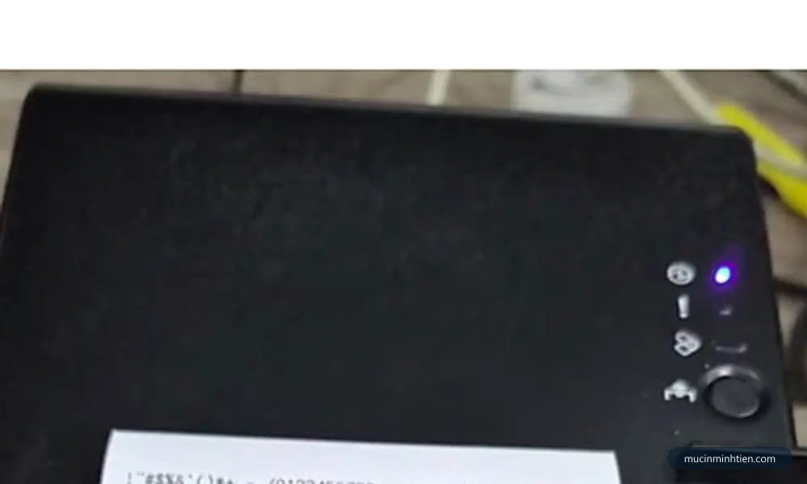
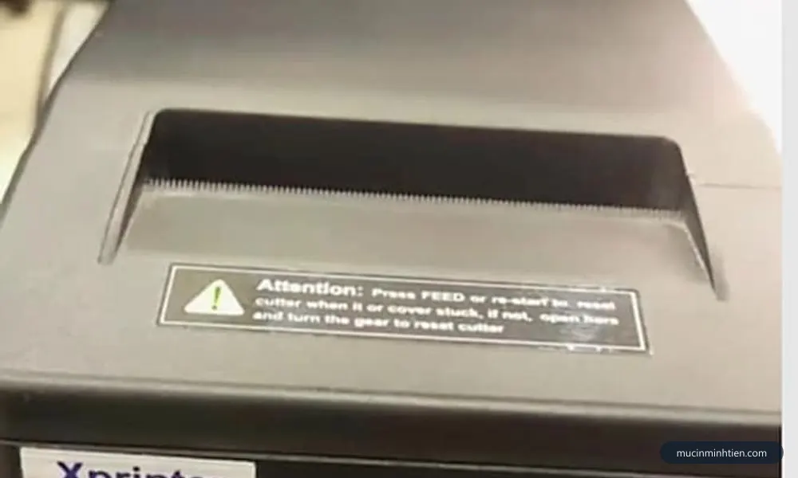
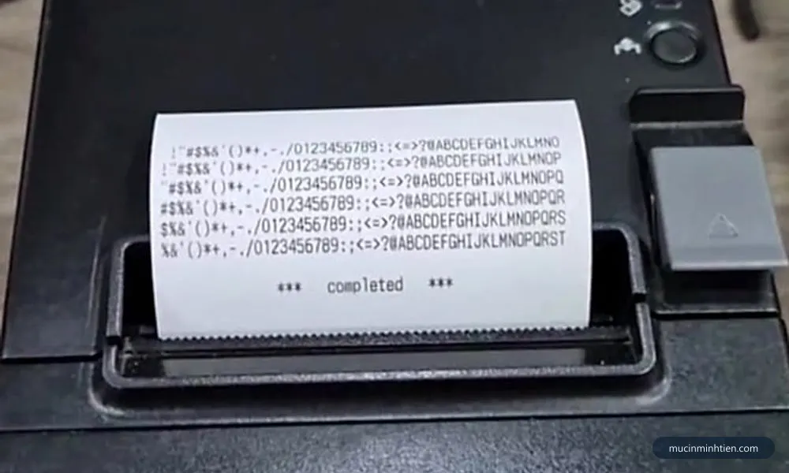

Máy in nhiệt in mờ, chữ nhạt: 7 nguyên nhân và cách sửa
Bước 1 — Cào móng tay lên mặt giấy, phép thử năm giây
Trước khi động vào bất cứ thiết lập nào, hãy xác nhận giấy còn dùng được và đang lắp đúng mặt. Lấy móng tay cào mạnh một đường lên mặt giấy.
- Hiện vệt đen rõ — mặt đó là mặt in và giấy còn tốt. Đối chiếu xem mặt đó có đang hướng về phía đầu in không.
- Hiện vệt xám nhạt hoặc không hiện gì — hoặc bạn đang cào nhầm mặt sau, hoặc cuộn giấy đã quá hạn và lớp phủ mất tác dụng.
Giấy nhiệt chỉ tráng hóa chất một mặt. Lắp ngược thì đầu in nung vào mặt giấy trơn và bản in ra rất nhạt hoặc trắng hoàn toàn. Đây là nguyên nhân số một khi lỗi xuất hiện ngay sau lúc thay cuộn giấy mới.
Cuộn giấy cũ để trong kho nhiều tháng, nhất là gần bếp hoặc nơi hứng nắng, cũng nhạt hẳn dù chưa dùng lần nào. Thử một cuộn mới còn nguyên bọc trước khi kết luận máy hỏng.

Bước 2 — Nâng độ đậm trong driver và trong phần mềm bán hàng
Đây là nguyên nhân hay gặp thứ hai, và nó thường xuất hiện sau khi ai đó cài lại máy tính hoặc cập nhật phần mềm bán hàng.
Phải kiểm tra cả hai nơi, vì nhiều phần mềm bán hàng có thiết lập in riêng ghi đè lên driver:
- Mở danh sách máy in trên Windows, chuột phải vào máy in nhiệt, chọn tuỳ chọn in ấn.
- Tìm mục ghi là density, darkness, print darkness hoặc độ đậm. Nâng lên một hai bậc rồi in thử.
- Mở phần mềm bán hàng, vào phần thiết lập máy in hóa đơn, kiểm tra xem có mục độ đậm riêng không.
- Một số dòng máy còn chỉnh được bằng tổ hợp nút trên thân khi in trang self-test — xem sách đi kèm máy.
Bước 3 — Lau đầu in nhiệt
Bụi giấy và keo dán ở mép cuộn bám thành lớp mỏng trên bề mặt đầu in, ngăn nhiệt truyền sang giấy. Biểu hiện điển hình là bản in nhạt không đều, chỗ đậm chỗ nhạt, hoặc mất hẳn vài vệt dọc theo chiều giấy chạy ra.
- Tắt máy và rút nguồn.
- Mở nắp cuộn giấy, tìm thanh kim loại mảnh nằm áp vào đường giấy — đó là đầu in.
- Thấm cồn isopropyl vào tăm bông hoặc khăn mềm không xơ, lau nhẹ dọc theo bề mặt. Không dùng nước, không dùng cồn y tế pha loãng vì để lại cặn.
- Lau luôn con lăn cao su trên nắp bằng khăn ẩm, xoay trục để lau hết vòng.
- Đợi khô hoàn toàn rồi mới đóng nắp và cắm điện.
Nếu sau khi lau vẫn mất đúng một vạch cố định thì điểm phát nhiệt tại đó đã chết, không lau được nữa. Xem thêm máy in bị sọc trắng ngang để phân biệt bám bẩn với chết điểm.

Bước 4 — Kiểm tra nguồn adapter
Đầu in nhiệt tiêu thụ dòng lớn theo từng nhịp, nhất là khi in dòng chữ đậm hoặc mã vạch. Adapter yếu, adapter dùng chung từ thiết bị khác, hoặc dây nguồn đứt ngầm bên trong đều làm điện áp sụt và bản in nhạt hẳn.
Dấu hiệu nhận biết khá đặc trưng:
- Bản in nhạt hơn rõ rệt khi in hóa đơn dài, còn hóa đơn ngắn thì vẫn tạm ổn.
- Máy tự khởi động lại hoặc đèn nguồn chớp giữa lệnh in.
- Nhạt nặng hơn khi máy đã chạy liên tục một lúc.
Đối chiếu thông số ghi trên adapter với thông số in trên thân máy, cả điện áp lẫn dòng. Dùng adapter đúng điện áp nhưng dòng thấp hơn là tình huống rất hay gặp và rất hay bị bỏ qua.
Bước 5 — Giảm tốc độ in
Tốc độ in càng cao thì thời gian mỗi điểm được nung càng ngắn, và với giấy mỏng hoặc giấy chất lượng thấp thì lượng nhiệt đó không đủ. Trong driver, tìm mục print speed và hạ xuống một bậc rồi in thử.
Đây là cách chữa ít người biết, nhưng lại hiệu quả với máy in tem và máy in đơn hàng khổ lớn — nơi mã vạch mờ là vấn đề thật vì máy quét không đọc được. Chi tiết về nhóm máy này ở bài máy in nhiệt khổ A5 in đơn hàng.
Bước 6 — Kiểm tra con lăn cao su và lực ép nắp
Giấy phải được ép sát vào đầu in thì nhiệt mới truyền hết. Con lăn cao su chai bóng sau vài năm, hoặc bản lề nắp rơ khiến nắp không đóng khít, thì giấy chỉ tiếp xúc hờ.
- Nhạt lệch hẳn một bên trang — lực ép không đều, thường do con lăn mòn không đều hoặc lò xo một bên yếu.
- Bản in vừa nhạt vừa co kéo, chữ dồn hoặc giãn — con lăn trượt, không kéo giấy đều.
- Nhấn tay lên nắp thì bản in đậm lên — chắc chắn là vấn đề lực ép, không phải vấn đề nhiệt.
Lau con lăn bằng khăn ẩm hồi phục được kha khá trường hợp chai nhẹ. Chai nặng hoặc mòn lõm thì phải thay, và đây là linh kiện rẻ.

Bước 7 — Đầu in đã hết tuổi thọ
Đây là kết luận cuối cùng, chỉ đưa ra sau khi sáu bước trên đều không ăn thua. Đầu in có tuổi thọ tính theo tổng chiều dài giấy chạy qua, phổ biến khoảng 50 km với dòng máy bill thông dụng — tương đương chừng 250.000 hóa đơn ngắn.
Dấu hiệu đầu in hết tuổi: bản in nhạt đều toàn trang dù đã đẩy độ đậm lên cao, giấy mới và tốt, nguồn đúng chuẩn, đầu in vừa lau sạch. Kèm theo đó thường là vài vệt trắng cố định do một số điểm đã chết hẳn.
Tới đây thì bài toán chuyển thành chuyện kinh tế chứ không còn là kỹ thuật: chi phí thay đầu in cộng công so với giá một máy mới cùng loại. Cách tính cụ thể có ở bài sửa máy in nhiệt: lỗi nào sửa được, lỗi nào nên thay.
Bảng tra: kiểu nhạt nào ứng với nguyên nhân nào
| Biểu hiện | Nguyên nhân | Cách xử lý | Chi phí tham khảo |
|---|---|---|---|
| Nhạt ngay sau khi thay cuộn giấy mới | Lắp ngược mặt in hoặc giấy sai loại | Cào móng tay thử, lật đúng mặt | 0 đ |
| Nhạt đều, xuất hiện sau khi cài lại máy tính | Thiết lập độ đậm bị đặt lại | Nâng density trong driver | 0 đ |
| Nhạt không đều, chỗ đậm chỗ nhạt | Đầu in bám keo và bụi giấy | Lau bằng cồn isopropyl | 0 – 100.000 đ |
| Nhạt dần khi in hóa đơn dài | Adapter nguồn yếu hoặc sai dòng | Thay adapter đúng thông số | Báo giá theo dòng |
| Nhạt ở máy in tem, mã vạch không quét được | Tốc độ in quá cao | Hạ print speed một bậc | 0 đ |
| Nhạt lệch hẳn một bên trang | Con lăn mòn không đều, lực ép lệch | Lau hoặc thay con lăn | từ 100.000 đ |
| Nhạt kèm chữ dồn hoặc giãn | Con lăn chai, giấy trượt | Lau con lăn; chai nặng thì thay | từ 100.000 đ |
| Nhạt đều dù đã thử hết, máy dùng nhiều năm | Đầu in hết tuổi thọ | Thay đầu in hoặc thay máy | Báo giá theo dòng |
Linh kiện máy in nhiệt khác nhau nhiều theo dòng nên nhiều hạng mục phải xem máy mới báo được. Gọi 0915 510 203 kèm tên dòng máy để được báo nhanh. Giấy in nhiệt khổ 80mm có sẵn trong bảng giá 773 mã.
Khi nào nên gọi kỹ thuật viên
- Đã thử đủ sáu bước trên mà bản in vẫn nhạt.
- Bản in nhạt lệch một bên và nhấn tay lên nắp thì đậm lên — cần chỉnh lực ép hoặc thay con lăn.
- Mất vệt trắng cố định sau khi lau sạch đầu in — điểm phát nhiệt đã chết.
- Máy tự khởi động lại giữa lệnh in, nghi nguồn hoặc bo mạch.
- Máy đang phục vụ bán hàng, không có thời gian thử từng bước.
Báo giá xử lý máy in nhiệt in mờ tận nơi
| Hạng mục | Áp dụng | Giá tham khảo |
|---|---|---|
| Kiểm tra và xử lý tại chỗ | Mọi dòng máy in nhiệt | từ 100.000 đ |
| Vệ sinh đầu in và con lăn | Xprinter, Epson TM, Gprinter, TSC | từ 100.000 đ |
| Cài đặt lại driver, khổ giấy, độ đậm | Mọi dòng | từ 100.000 đ |
| Thay con lăn cao su | Tùy dòng máy | Báo giá theo dòng |
| Thay adapter nguồn | Tùy thông số máy | Báo giá theo dòng |
| Thay đầu in nhiệt | Tùy dòng máy | Báo giá theo dòng |
| Giấy in nhiệt khổ 80mm | Bán theo lốc 10 cuộn | từ 50.000 đ/lốc |
Xem đầy đủ hạng mục và cam kết ở trang dịch vụ sửa máy in tận nơi TP.HCM.
Cách phòng tránh in mờ tái phát
- Lau đầu in mỗi lần thay cuộn giấy. Mất mười giây, và là việc hiệu quả nhất trong toàn bộ danh sách.
- Dùng giấy nhiệt đạt chuẩn, mặt in trơn mịn. Giấy nhám vừa in nhạt vừa mài mòn đầu in — xem cách chọn giấy in nhiệt.
- Không mua trữ giấy quá nhiều. Lớp phủ cảm nhiệt xuống cấp theo thời gian, nhất là trong kho nóng ẩm.
- Cắm đúng adapter của máy. Dán nhãn ghi tên máy lên cục nguồn nếu quán có nhiều thiết bị.
- Đặt máy tránh nắng và tránh bếp. Nhiệt môi trường cao làm cả cuộn giấy lẫn bản in đã in xuống màu nhanh hơn.
Câu hỏi thường gặp
Máy in bill in mờ có phải do hết mực không?
Chỉnh độ đậm máy in nhiệt ở đâu?
Vì sao hóa đơn in nhiệt để vài tháng lại mờ dần?
In mờ một nửa trang, nửa còn lại vẫn đậm là lỗi gì?
Giấy in nhiệt loại nào làm bản in đậm và bền hơn?
Chi phí xử lý máy in nhiệt in mờ khoảng bao nhiêu?
Bài viết liên quan
- Sửa máy in nhiệt: lỗi nào sửa được, lỗi nào nên thay
- Máy in bill, in nhiệt không in được: 8 nguyên nhân và cách sửa
- Máy in nhiệt khổ A5 in đơn hàng: chọn máy và xử lý lỗi
- Giấy in nhiệt khổ 57mm hay 80mm: chọn đúng cho máy bill
- Máy in bị sọc trắng ngang: xử lý theo từng loại máy
- Dịch vụ sửa máy in tận nơi TP.HCM